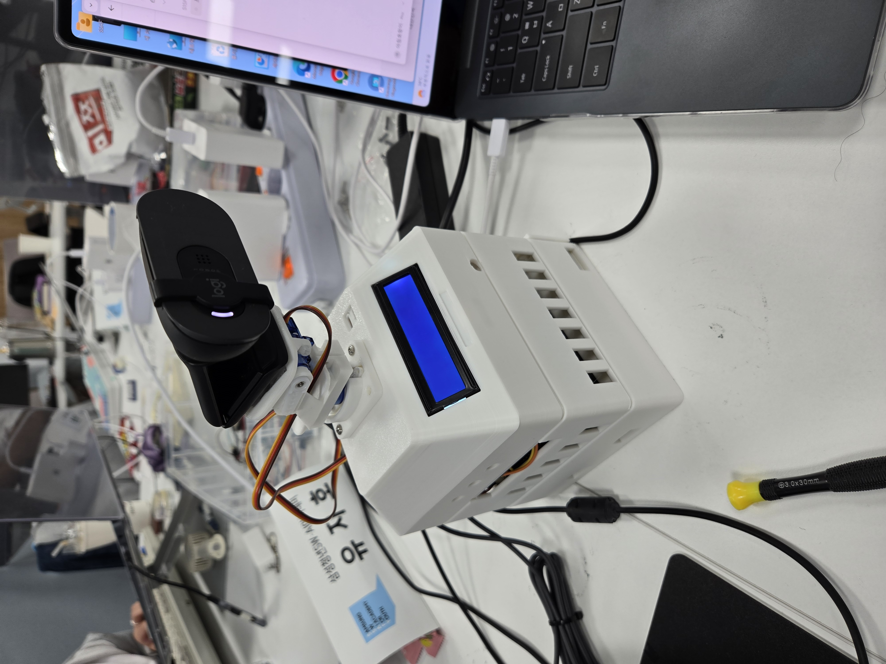

YOLOv8n*으로 사람·고양이·강아지를 탐지하고 ByteTrack*으로 추적, 서보로 카메라를 돌린다.
EfficientAT MN10으로 웃음·박수를 탐지하고 임계값으로 이벤트를 판정한다.
서버 업로드, 알림, 앱 표시.
홈캠에 필요한 건 그중 3개뿐이다. 나머지는 계산도, 추적도 필요 없다.
| 클래스 ID | 이름 | 용도 |
|---|---|---|
| 0 | person | 추적 주 대상 |
| 15 | cat | 반려동물 |
| 16 | dog | 반려동물 |
탐지 결과를 다 받아놓고 버린 게 아니라, 추론 호출에 classes 인자로 직접 넘겼다.
후처리 방식은 80개 클래스를 모두 계산한 뒤 버리는 것이고, 추론 단계 지정은 불필요한 후보를 애초에 줄인다.
추적기 ByteTrack*도 이 3종에 대해서만 ID를 유지한다.
person 클래스 하나로만 측정했습니다. 고양이·강아지의 정확도는 측정하지 않았습니다. 운영 필터가 3종이라는 것과 벤치마크가 1종이라는 것은 다른 이야기입니다.| 장치 / 전력 | Jetson Orin Nano · 25W |
| 후보 | YOLOv8n · YOLO11n · YOLO26n |
| 입력 | 640×640, batch 1 |
| 평가 이미지 | 395장 |
| 정답 상자 / 빈 장면 | 581개 / 52장 |
| 반복 | 모델당 3회 (총 9회) |
| 실행 순서 | 회전 (1·2·3번째를 한 번씩) |
결과를 보고 기준을 맞춘 게 아니라, 기준을 먼저 정하고 측정했습니다.
| 모델 | 평균 FPS* | 추론 평균 | Wall P95* | mAP50-95* | 운영 P / R / F1* | FP / FN* |
|---|---|---|---|---|---|---|
| YOLOv8n 선택 | 27.095 | 14.530ms | 39.303ms | 81.3% | 96.89 / 96.56 / 96.72% | 18 / 20 |
| YOLO11n mAP 1등 | 26.563 | 15.155ms | 40.008ms | 81.9% | 94.90 / 96.04 / 95.47% | 30 / 23 |
| YOLO26n FPS 1등 | 29.203 | 15.012ms | 36.555ms | 79.7% | 95.04 / 92.25 / 93.62% | 28 / 45 |
mAP는 0.6%p 높지만, 실제 운영 confidence 0.25에서 F1이 낮고 오탐 12건·미탐 3건이 더 많다.
최고 mAP와 격차 2.2%p → 사전 기준 2.0%p 초과. 두 사람 교차 조건 F1 69.23%, 미탐 45건.
속도 1등도 mAP 1등도 아닌, 기준을 모두 통과하면서 운영 오류 합(FP+FN)이 가장 적은 후보. 38 vs 53 vs 73건.
홈캠은 단발 분석이 아니라 프레임을 지속 처리하므로 지연과 처리량이 중요하다. FP16은 INT8과 달리 별도 보정 데이터 절차 없이 적용할 수 있다.
그래서 변환 성공만 확인하지 않았다. 수동 라벨 395장으로 정확도를 다시 측정해 기준 통과를 확인한 뒤 전환했다.
TensorRT 엔진은 빌드한 버전과 GPU 환경에 종속된다. 일반 모델 파일처럼 배포하지 않고, 대상 젯슨에서 역직렬화와 실제 추론을 검증한 뒤 반영했다.
| ① 엔진 파일 존재 | 경로 확인 |
| ② SHA-256* 일치 | cea7f5dd…a652a1f1 |
| ③ 실추론 probe* | GPU 0에서 실제 추론 |
엄격 tensorrt 모드에서는 검증 실패를 PyTorch* fallback으로 숨기지 않고 서비스 시작을 실패시킨다. 조용한 성능 저하가 가장 나쁜 실패이기 때문.
“TensorRT로 바꿔서 몇 % 빨라졌다”는 말하지 않습니다.
PyTorch 측정 = 9개 영상 8,100프레임
TensorRT 측정 = 라벨 이미지 395장
데이터셋과 실행 도구가 다르므로 두 값을 나눠 향상률을 만들 수 없습니다.
필요하다면 같은 395장·같은 runner에서 .pt와 .engine만 바꿔 재측정해야 합니다.
| 파라미터 | 기본값 | 무엇을 막기 위한 값인가 |
|---|---|---|
min-track-frames | 3 프레임 | 한 프레임 반짝 뜬 오탐(FP*)이 카메라를 움직이지 못하게 |
switch-frames | 5 프레임 | 두 그룹 사이에서 카메라가 왔다갔다 진동하는 것을 방지 |
deadzone | 0.12 | 중앙 근처 미세 오차로 명령이 계속 나가는 것을 방지 |
ema-alpha | 0.25 | 목표점 급변을 평활화 (낮을수록 부드럽고 느림) |
subject-y-ratio | 0.05 | 박스 중앙(0.5)이 아닌 위쪽 5% = 머리 위치를 추적 → 화면에서 머리가 잘리지 않게 |
home-after-seconds | 5.0초 | 대상 소실 후 즉시 복귀 방지 (잠깐 가려진 경우 대비) |
모든 대상의 합집합 상자를 만들고 그 중심을 추적점으로 삼는다.
1명이면 합집합 = 그 사람의 상자이므로 결과적으로 그 사람을 추적한다.
안전 영역 = 화면 가장자리 10%를 뺀 영역.
후보 창을 여러 개 만들어 각 창에 들어가는 조합을 모두 계산하고 점수를 매긴다.
1순위 — 담긴 인원 수 (많을수록 좋음)
2순위 — 화면 중앙에서 가까울수록 좋음 (카메라를 덜 움직임)
전원을 못 담으면 limited_group=true로 기록한다.
switch-frames 5 때문에 새 그룹이 5프레임 이상 유지돼야 실제로 갈아탑니다.0.1초마다 정규화 오차와 두 축 명령을 MQTT로 발행. command-interval=0.10
0.05초마다 자체 루프. 명령이 없는 사이에도 목표를 향해 속도 제한 내에서 조금씩 이동. SERVO_CONTROL_HZ=20
PCA9685가 20ms마다 펄스를 출력. 펄스 폭이 각도를 결정. SERVO_PWM_FREQUENCY=50
| 1도당 | 11.1111 us |
| PAN HOME | 1500 us |
| 펄스 범위 | 495 ~ 2505 us |
| 가동 범위 | PAN −90~+90° · TILT 0~+110° |
· 명령 TTL 500ms — 지난 메시지는 폐기
· 750ms 무신호 시 HOLD — 스스로 정지
· 역순 메시지, 다른 device_id, 범위 밖 오차는 폐기
· 전원 인가 시 PARK 자세로 시작 (튐 방지)
| 모델 | 런타임 | 정밀도 | 입력 창 | hop | 연속 양성 창 | 파일 크기 |
|---|---|---|---|---|---|---|
| YAMNet | TFLite | float32 | 0.975초 | 0.4875초 | 2 | 4.1 MB |
| EfficientAT MN10 | PyTorch* CUDA | FP16 | 10초 | 2.5초 | 1 | 19.7 MB |
| PANNs CNN10 | PyTorch* CUDA | FP32 | 2초 | 1초 | 2 | 25.2 MB |
이건 백본만 비교하는 마이크로벤치마크가 아니라 서비스 수준 비교입니다. 각 모델이 전제하는 시간 문맥이 다르므로 억지로 같은 길이를 넣으면 오히려 설계 가정을 깨뜨립니다.
알고 싶은 것은 “이 모델을 우리 서비스에 넣으면 어떤가”이므로 각자의 권장 조건으로 측정했습니다.
· 모델 SHA-256* 고정 (3종 모두 기록)
· 모델별 3회, 실행 순서 회전
· 평가 중 상시 녹화·업로드·Device Agent·서보 제어 전부 정지 (자원 간섭 제거)
· validation 60개로 임계값 선택 → test 2,064개에서 재조정 없음
· 데이터 중복 0건 확인
| 모델 | 이벤트 | P* | R* | F1* | 거짓/시간 |
|---|---|---|---|---|---|
| YAMNet | 웃음 | 0.495 | 0.833 | 0.621 | 6.52 |
| YAMNet | 박수 | 1.000 | 0.717 | 0.835 | 0.00 |
| EfficientAT | 웃음 | 0.789 | 0.933 | 0.855 | 4.17 |
| EfficientAT | 박수 | 1.000 | 0.933 | 0.966 | 0.00 |
| PANNs | 웃음 | 0.525 | 0.867 | 0.654 | 9.13 |
| PANNs | 박수 | 0.947 | 0.900 | 0.923 | 0.26 |
| 모델 | 웃음 R* | 박수 R* | Macro F1* |
|---|---|---|---|
| YAMNet | 0.80 | 0.85 | 0.904 |
| EfficientAT | 0.85 | 0.80 | 0.904 |
| PANNs | 0.85 | 0.95 | 0.947 |
| 그 창을 지배한 소리 | 창 수 | 중앙값 | 상위 10% | 최대 |
|---|---|---|---|---|
| 말소리 | 79,624 | 0.0009 | 0.0126 | 0.4463 |
| 웃음 | 81 | 0.3380 | 0.5870 | 0.7739 |
※ “지배” = 그 창에서 가장 높은 점수를 받은 소리. 합이 112,724가 안 되는 것은 나머지 창을 제3의 소리가 지배했기 때문.
0.08에서 나간 발화 471건 중 98.7%가 말소리였습니다. 표본 몇 개로는 대화 분포의 꼬리를 막을 수 없습니다.| 감도 단계 | 임계값 | 말소리 오검 | 웃음 검출 |
|---|---|---|---|
| sensitive | 0.12 | 0.97% | 96% |
| default | 0.15 | 0.70% | 90% |
| insensitive | 0.30 | 0.07% | 63% |
말소리가 창을 지배하는데 웃음 점수만 살짝 넘는 경우가 남습니다. 오발화 창의 우세 비율 중앙값은 0.057이었습니다 — 1등 소리의 6%짜리 근거로 이벤트가 나가고 있었습니다.
그래서 DOMINANCE 하한을 넣되 기본값은 0.0(미적용)으로 뒀습니다. 어느 값이 맞는지 실측 근거가 아직 없기 때문입니다. 대신 창마다 값을 기록해 다음 재보정 때 사후 스윕으로 정합니다.
벤치마크가 validation에서 고른 값은 0.016915, 운영값은 0.15.
모순이 아닙니다. 전자는 벤치마크 데이터셋 기준, 후자는 운영 로그 112,724창 재보정 결과. 서로 다른 대상을 잰 값입니다.
AUDIO_EVENT_CLAP_ENABLED=false
백엔드 CLAP 계약 배포 전까지 대기 중. 탐지는 되지만 이벤트로 나가지 않습니다.
박수 F1 0.966은 벤치마크 성능이지 현재 운영 기능이 아닙니다.
코드 argparse 기본값 0.35
벤치마크 보고서 운영점 0.25
어느 쪽이 실제 운영값인지 저장소만으로는 단정할 수 없습니다.
런북 2026-07-29 프로필 1500us
코드 현재 기본값 611us
611us는 8월 6일 실측 보정 결과이고, 런북에 옛 프로필이 남아 있는 것입니다.
실행 순서 회전, 모델당 3회 반복, 모델 SHA-256* 고정, 진단 로그 112,724창 전수 분석.
비전은 mAP* 1등 대신 운영 오류가 가장 적은 후보를. 오디오는 F1* 1등을 섀도 모드부터 검증.
속도 향상률 미측정, dominance 기본값 0.0 유지, 문서·코드 불일치 4가지 공개.